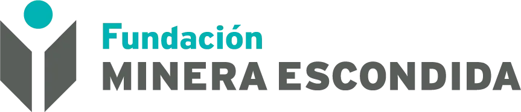

Te damos la bienvenida a Speakers en Verde: el proceso formativo anual que despierta talentos, resolución de problemas y oratoria en niñas, niños y jóvenes de Tocopilla, culminando en un gran viaje hacia la final regional en Antofagasta.
Una delegación de más de 80 personas entre estudiantes, profesores guías y apoderados se traslada a Antofagasta para defender sus soluciones sostenibles frente a un jurado de expertos.
Más que una competencia, es una plataforma integral de formación que conecta la conciencia medioambiental con el desarrollo de competencias de liderazgo, resiliencia y comunicación en las juventudes de nuestra región.
Incentivamos a estudiantes entre 6° básico y 4° medio a observar problemáticas reales de su entorno comunal (residuos, áridos, biodiversidad, inclusión) y formular soluciones sostenibles con modelo de valor.
Una gran idea necesita ser comunicada con pasión y asertividad. Capacitamos a cada estudiante en dominio del escenario, expresión corporal, estructura de pitch y argumentación de impacto.
Entregamos financiamiento directo de materiales, fletes e insumos técnicos a los centros educativos de Tocopilla, acompañando mano a mano a los profesores líderes en todo el proceso.
Un estudio de la Fundación Kauffman demuestra que los jóvenes que participan en programas tempranos de emprendimiento tienen una mayor probabilidad de desarrollar habilidades críticas como creatividad, resiliencia y resolución de problemas. En nuestra región, estas herramientas responden directamente a las brechas detectadas por el informe GEM para Chile y los lineamientos de la Estrategia Regional de Innovación (ERI) de Antofagasta.
Un proceso que comenzó en 2019 y que año tras año ha tejido alianzas con instituciones que creen en el potencial de la juventud del norte grande.
Speakers en Verde comienza su ejecución en la Región de Antofagasta, abarcando diversas comunas y formalizando las primeras alianzas interinstitucionales para potenciar el talento escolar temprano.
Implementación del modelo de Aprendizaje Basado en Proyectos articulado con el cuidado ambiental.

En la edición 2022 impulsada por Corfo, Fundación Minera Escondida (FME) formó parte activa del jurado evaluador, representada por Jenny, aportando una mirada experta y cercana que dejó una huella profunda en los equipos.
Articulación virtuosa entre el ecosistema público-privado de la región, fortaleciendo el feedback a los estudiantes y la calidad de los proyectos presentados.
Un proceso de cuatro meses que involucró a establecimientos educativos de Tocopilla y María Elena. Equipos de entre 5 y 7 alumnos (desde 6.° básico hasta 4.° medio) junto con un profesor o profesora guía, se embarcaron en un proceso formativo integral promoviendo habilidades, actitudes y competencias emprendedoras para el desarrollo de talentos.
Liderado por Verdical, apoyado por el Comité Corfo Antofagasta a través de recursos FIC-R del Gobierno Regional de Antofagasta (Iniciativa "Transferencia Ecosistema de Emprendimiento Innovador Antofagasta", Código BIP 40014448-0). Asimismo, con la colaboración de la Municipalidad de Tocopilla, el Departamento de Educación Municipal y SQM Yodo Nutrición Vegetal.
Sistema donde los peces expulsan desechos ricos en nutrientes que son aprovechados como fertilizante natural para el cultivo sustentable de plantas.
Iniciativa orientada a reducir los índices de obesidad escolar mediante la creación de un gimnasio itinerante construido con materiales 100% reutilizados.
Gastronomía didáctica y sustentable impulsada a través de energía solar limpia, fomentando el emprendimiento escolar en etapas tempranas.
Desarrollo de proyectos emblemáticos frente a la escasez hídrica (Desalación Latrillana), residuos (Agrobag, Gloriosas Bolsas), eficiencia energética (Domótica Verde) e inclusión (Hidroponía y Jardín Terapéutico).
Una generación prolífica que demostró la madurez metodológica de los estudiantes para abordar problemáticas concretas de su entorno con rigor técnico y propósito comunitario.
Un despliegue histórico focalizado en la comuna de Tocopilla: 10 equipos de 9 establecimientos educativos y una delegación de más de 80 personas que viajarán a Antofagasta para la gran final en Usqai UCN.
Impulsado por SQM, ejecutado por Fundación En Verde con el diseño de Verdical y la colaboración de Usqai UCN.
Iniciativas formuladas por las comunidades escolares de Tocopilla durante el ciclo 2025, sentando el precedente de innovación y sustentabilidad que hoy inspira la versión actual.
Un registro audiovisual que captura la energía, emoción y talento de los estudiantes de Tocopilla en la culminación del programa Speakers en Verde 2025, presentando sus proyectos frente a la comunidad escolar y la mesa del jurado evaluador.
 Espacio Vivo Construido
Espacio Vivo Construido
Espacio de calma, relajación y autorregulación emocional para toda la comunidad educativa. Nació como idea en Speakers en Verde 2025 y hoy es una realidad física con pileta, peces, flora y caída de agua que acompaña especialmente a estudiantes dentro del espectro autista.
Frente al sobregiro ecológico nacional, diseño y producción de tote bags sustentables a partir de bioplásticos biodegradables que reemplazan el plástico de un solo uso.
 Equipo en Aula de Innovación
Equipo en Aula de Innovación
Aborda el impacto ambiental de los jabones tradicionales promoviendo jabones en barra artesanales y 100% biodegradables con hierbas medicinales ancestrales (tomillo, ricarica y boldo). Crea además una oportunidad de emprendimiento real para apoderados y familias mediante su producción y venta comunitaria.
Aborda el déficit alimenticio matinal en escolares mediante códigos QR en colaciones con recetas saludables, reciclaje y cápsulas educativas de nutrición consciente.
Resuelve la pérdida del 25% de clases por cortes de agua mediante un sistema solar de destilación y condensación para sanitarios y lavado, asegurando continuidad educativa.
Mejora la eficiencia eléctrica en Tocopilla mitigando el desperdicio energético en salas y oficinas mediante interruptores inteligentes automatizados y control por voz (Alexa).
Puesta en valor de la historia y arquitectura de Tocopilla a través de un canal educativo de YouTube con cápsulas breves que fomentan el sentido de pertenencia y cuidado patrimonial.
Cerraduras inteligentes con PIN, contraseña y huella digital para resguardo de pertenencias y control de accesos con bitácoras automatizadas en los establecimientos.
Pérgola y espacio libre con academia ambiental para descanso, estudio y música, diseñado para prevenir crisis emocionales y fomentar la autorregulación y la convivencia sana.
Combate la contaminación textil comunal reutilizando ropa en desuso para darles una segunda vida como bolsas utilitarias, promoviendo la economía circular y la reducción de desechos.
Taller práctico de hidroponía para estudiantes con necesidades especiales, promoviendo habilidades manuales, autonomía, autocultivo sustentable y conciencia ecológica.
Los estudiantes no llegaron a la final por casualidad: transitaron una ruta de 9 actividades de aprendizaje experiencial, prototipado real y mentorías de oratoria intensivas.
Elaboración del plan de trabajo, diagnóstico de estado del arte y primeras reuniones presenciales con los establecimientos educacionales de Tocopilla para coordinar su integración.
Jornada inicial de motivación e información para dar a conocer los alcances, objetivos pedagógicos y detalles del programa a los estudiantes y docentes beneficiarios.
Convocatoria abierta para centros educativos públicos y particulares subvencionados de Tocopilla, dirigida a niños, niñas y jóvenes entre 6° básico y 4° año medio.
Evaluación técnica según las bases del certamen, seleccionando aquellas propuestas ecológicas y sociales nacidas en el aula escolar que resuelven dolores de su entorno inmediato.
Acuerdo de insumos específicos con cada profesor líder y despacho directo a cada colegio (incluyendo traslados y fletes) para que los estudiantes pudieran construir sus prototipos reales.
Talleres intensivos para estudiantes y profesores en comunicación efectiva, resolución de problemas, oratoria, modelo de negocios escolar y expresión escénica.
Acompañamiento en paralelo presencial y remoto con los líderes de equipo para orientar avances, resolver inquietudes y afinar la narrativa del proyecto.
Evaluación integral de la incorporación de las herramientas formativas y cumplimiento de requisitos para ratificar a la delegación que defenderá su pitch en Antofagasta.
13 de Noviembre en Usqai UCN: Presentación de pitch de 5 minutos ante jurado calificador, deliberación, premiación valorada y reconocimiento regional.
Haz clic en cualquier punto del mapa para descubrir el colegio participante y abrir la ficha de su proyecto. También puedes hacer clic en las escuelas del selector rápido o en las tarjetas inferiores.
Una jornada completa pensada para empoderar a los estudiantes tocopillanos, fomentar la camaradería regional y culminar con la ronda de presentaciones ante el jurado calificador e invitados especiales.
Cada uno de los 10 equipos escolares dispondrá de 5 minutos para defender su solución frente al jurado evaluador, respondiendo preguntas y demostrando su despliegue oratorio.
Universidad Católica del Norte, Avenida Angamos 0610, Antofagasta.
Llegada de la delegación de Tocopilla y acreditación de los 10 equipos.
Apertura oficial por parte de la organización y entidades colaboradoras.
Taller vivencial de autoconfianza, respiración y calentamiento escénico para los escolares.
Espacio de descanso e integración para toda la delegación de Tocopilla.
Reagrupación en el auditorio y preparación de equipos.
Alineación de energía escénica y últimos detalles antes de la evaluación.
Los 10 equipos escolares defienden sus proyectos sustentables frente al jurado evaluador y público invitado.
Evaluación de las rúbricas y criterios de premiación.
Entrega de reconocimientos valorados y distinciones por cumplimiento de bases.
Despedida de la delegación y retorno seguro a Tocopilla.
Una alianza público-privada comprometida con el desarrollo de competencias de innovación y sustentabilidad en Tocopilla.
Impulsa activamente el desarrollo social y ambiental de Tocopilla.
Vinculación en terreno y gestión directa con los centros educativos.
Diseño metodológico, pedagogía formativa y mentorías en oratoria.
Laboratorio de Emprendimiento UCN, anfitriones de la jornada final.
Con el grato recuerdo de la edición 2022 (impulsada por Corfo), donde Fundación Minera Escondida nos acompañó como parte del jurado evaluador con la destacada participación de Jenny, nos complace extender la más cordial invitación para contar formalmente con la presencia e imagen de FME en esta instancia final 2026 (presencia de marca en gráficas y registros audiovisuales de la jornada).
Revisa las rúbricas de evaluación del jurado, etapas, requisitos y directrices de participación.